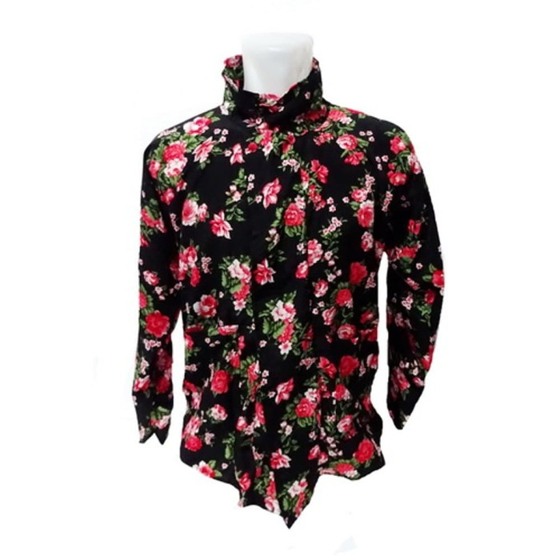
Busana
Surjan Sembagi
Surjan Sembagi, utawi ugi asring winastan surjan kembangan, punika sejatosipun busana ingkang mligi dipunagem déning Sampéyandalem Ingkang Sinuwun Sri Sultan Hamengkubuwana ingkang jumeneng nata, lan ugi Sri Paduka Kangjeng Gusti Adipati Pakualam ingkang jumeneng nata. Ananging adatipun ugi kaginakaken ing upacara pawiwahan.
 JogjaPedia
JogjaPedia
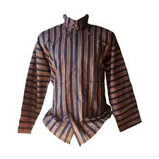
Busana
Surjan Lurik
Surjan lurik yaiku busana adat lan klambi resmi lanang ing budaya Jawa Tengah lan Yogyakarta sing nggunakake bahan kain tenun lurik motif garis-garis. Lumrahe busana iki nggunakake kerah jejeg, lengen dawa, lan ana saku ing sisih ngarep. Surjan lurik diciptakake dening Sunan Kalijaga minangka pakaian sing ngemot makna filosofis babagan kesederhanaan, kawicaksanan, lan pemisahan antarane becik lan ala.
JogjaPedia
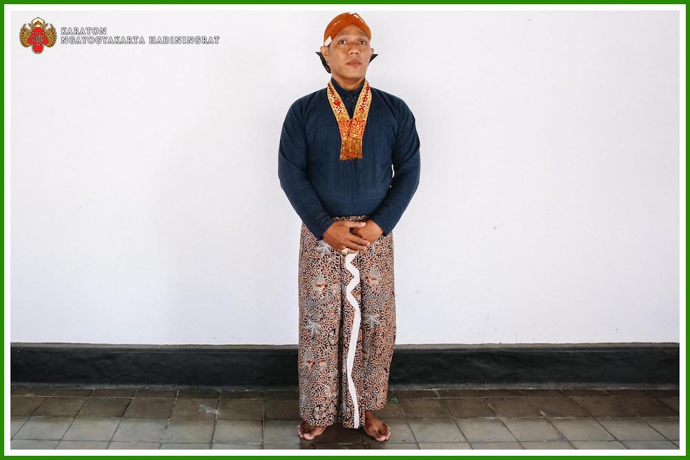
Busana
Busana Pranakan
Busana Pranakan (utawa Peranakan) yaiku sandhangan dinas resmi kanggo Abdi Dalem jaler (priya) ing Keraton Yogyakarta. Sandhangan iki digawe saka kain lurik biru peteng lan ireng kanthi motif garis. Tembung "pranakan" tegese "rahim" utawa "kandungan", sing nandhakake rasa persaudaraan lan kesatuan ing antarane Abdi Dalem, kaya sajeroning siji kandhungan.
JogjaPedia
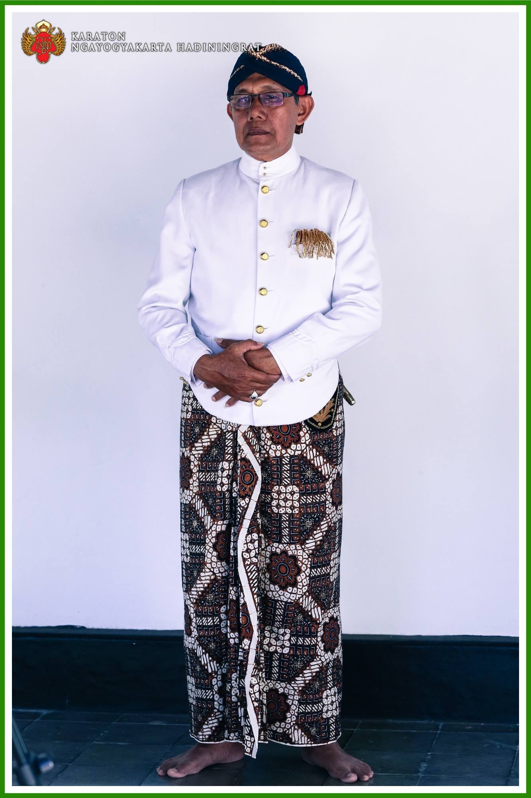
Busana
Busana Atela
Atéla, wujuding busana kadosdéné jas kanthi werni polosan, adatipun busana punika dipunagem déning para abdidalem apangkat bupati sapanginggil nalika pisowanan salebeting kraton. Atela iki minangka busana atasan pria kanthi model lan posisi kancing sing khas, lan kudu dipadhangke karo jarik lan udheng.
JogjaPedia
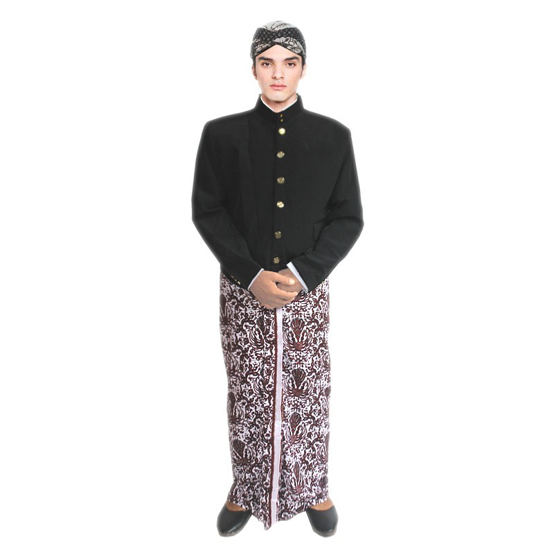
Busana
Busana Beskap
Beskap kados busana Atela ananging warni cemeng. Adatipun busana punika dipunagem dening tiyang saking njawi kraton lan sanes abdi dalem, nalika dherek upacara ing kraton. Bentuké kemeja sing ora ana kerah lipaté lan duwé potongan miring ing sisih ngarep kanthi kancing kang miring uga. Werna ireng iku warna lumrahé kanggo beskap, nanging saiki wis ana warna liyané.
JogjaPedia
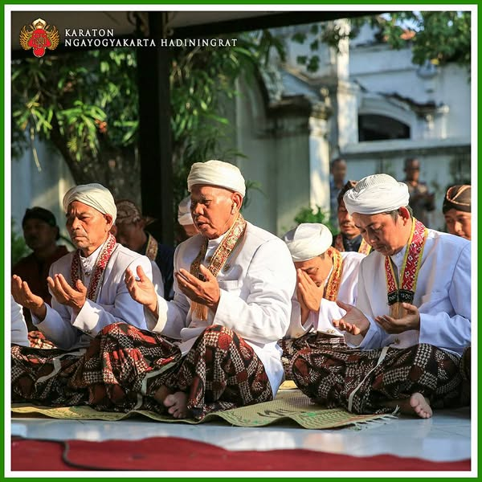
Busana
Busana Antari
Antari inggih menika busananipun para abdi dalem kaji ingkang wujudipun kados busana atela ananging landhung (wingking mboten krowok/bolong). Umumipun wena pethak, dipunangge ing acara keagamaan ing kraton.
JogjaPedia
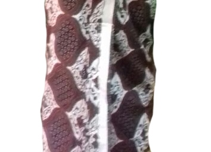
Wiron
Wiron Limrah
Wiron limrah inggih punika wiron ingkang kadamel lajeran seretipun jarit limrah. Cacahipun wiron inggih menika 5 dumugi 7, wiyaripun tigang cari. Anggenipun ngangge saking tengen- ngiwa.
JogjaPedia
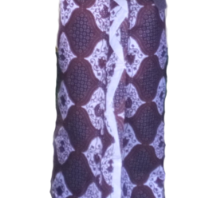
Wiron
Wiron Engkol
Wiron éngkol yaiku wiron ingkang kadamel ngeluk / ngéngkol, adatipun wiron punika kaginakaken déning para abdidalem manawi pinuju sowan wonten kraton, utawi wiron padintenan salebeting kraton.
JogjaPedia
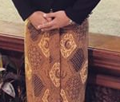
Wiron
Wiron Sala
Wiron sala, wiron ing busana kajawèn gagrag Sala sèrètipun boten katingalaken kados ing gagrag busana Ngayogya.
JogjaPedia
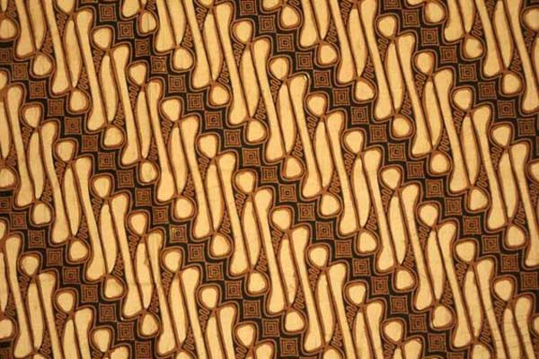
Motif
Motif Parang Rusak
Motif bathik iki diciptakake dening Penembahan Senopati nalika semedi ing Pesisir Kidul. Iki diilhami dening ombak tanpa henti nabrak terumbu karang. Iku nglambangake manungsa sing ing batin nglawan piala kanthi ngendhaleni hawa nafsune, saengga bisa nggayuh kawicaksanan, budi pekerti luhur sing bakal menang.
JogjaPedia
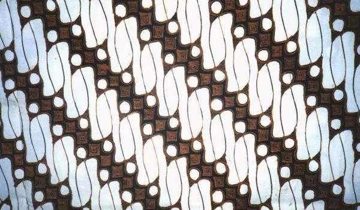
Motif
Motif Parang Barong
Motif iki mujudake motif kang ukurane luwih gedhe tinimbang parang pecah, kang digawe dening Sultan Agung Hanyakrakusuma. Motif iki nduweni teges ngenani dhiri sajrone dinamika usaha sing terus-terusan, kebijaksanaan ing obah, lan keprigelan ing tumindak.
JogjaPedia
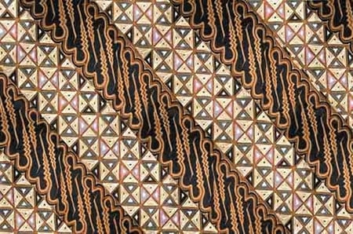
Motif
Motif Parang Slobog
Motif iki nglambangake keteguhan, ketelitian, lan kesabaran, lan biasane digunakake ing upacara pelantikan. Menggah pangajeng-ajeng pangajeng-ajeng pangajeng-ajeng pangajeng-ajeng ingkang sampun kalantik nindakaken jejibahan kanthi integritas lan wicaksana.
JogjaPedia
Motif
Motif Kawung Ageng
Kawung Ageng/Sen mujudake motif kawung kanthi wujud bunder lonjong luwih gedhe, Ananging sumber sanesipun ngandharaken bilih Kawung Sen, Kawung Bribil, saha Kawung Gidril menika motif kawung ingkang sami, saha dipunsebat inspirasi saking arta sen, dene motif Kawung Picis sanes.
JogjaPedia
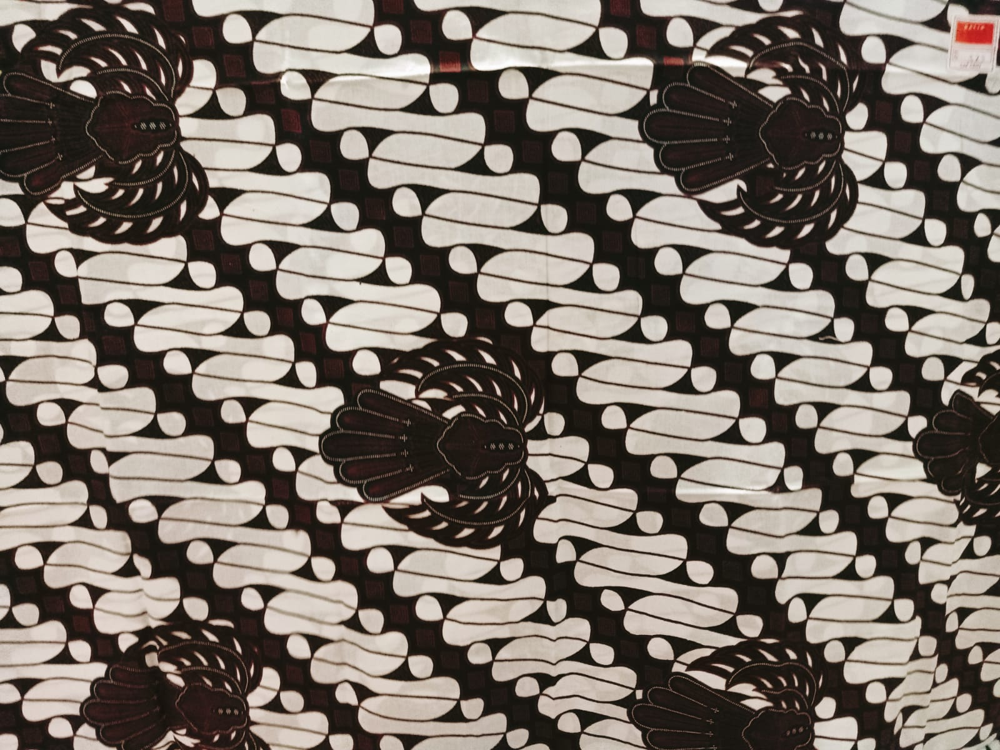
Motif
Motif Parang garuda
Motif parang garuda yaiku motif batik loro sing digabungake, yaiku motif parang (sing nglambangake ombak laut lan semangat sing ora tau kendhat lan simbol kekuatan) karo motif garuda (sing nglambangake matahari, kejantanan, lan kekuwasaan). Dadi, motif iki nggambarake kekuatan lan semangat kejantanan kanthi gambaran garuda sing madhangi lan motif parang sing ora kendhat.
JogjaPedia